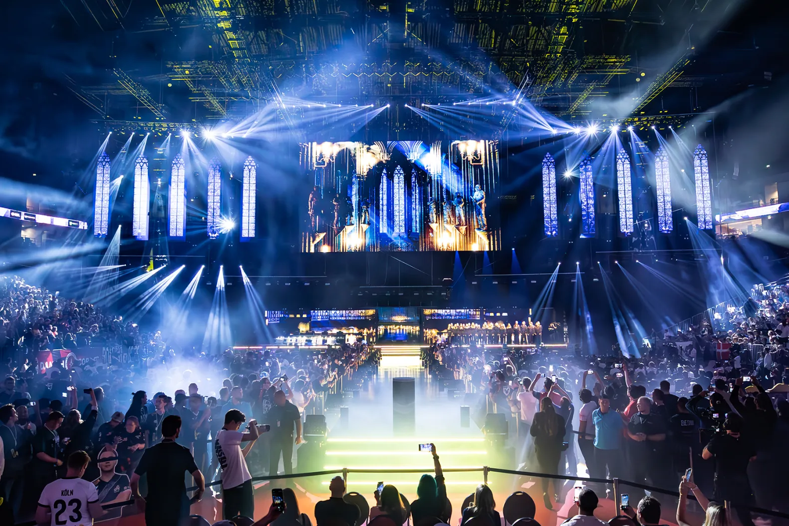

LANXESS ARENA
Cologne, DE
19.500
Capacidade
1998
Inaugurada
12+
Majors sediados
5 min
do centro
Localização & transporte
Como chegar
Endereço
Willy-Brandt-Platz 3, 50679 Köln
A arena fica no bairro Deutz, às margens do Rio Reno, com vista para a Catedral de Colônia. A apenas 5 minutos do centro histórico (Altstadt).
Transporte
- Metrô: linhas U3, U4 ou U16 até Deutz/Messe, 5 min a pé
- S-Bahn (do aeroporto CGN): S13 até Köln Hbf, depois U-Bahn (~35 min total)
- Carro: estacionamentos P1 e P2 na vizinhança
- Apps: Bolt e Uber operam normalmente em Colônia
Local tips
Onde ficar & o que comer
Onde ficar
A região da Altstadt (centro histórico) é a melhor opção: tudo a pé, bares e restaurantes pela noite.
- Altstadt-Nord: hotéis 4 estrelas a 10 min da arena
- Deutz: hospedagem mais barata, do outro lado do Reno (ao lado da arena)
- Belgisches Viertel: bairro alternativo, ótimo para foodies
- Hostels recomendados: Pathpoint Cologne, Station Hostel
O que comer
Colônia tem gastronomia própria — pare nos Brauhäuser (cervejarias tradicionais).
- Kölsch: a cerveja oficial da cidade, servida em copos de 200ml
- Halve Hahn: pão de centeio com queijo Gouda e mostarda
- Currywurst: salsicha com molho de curry — clássico alemão
- Himmel un Ääd: purê de batata com maçã e morcela
- Brauhaus dicas: Früh am Dom, Päffgen, Sünner im Walfisch
Guia do espectador
Dicas para o evento
01
Chegue cedo Filas de entrada nos dias de público (quartas e final) chegam a 30 — 45 min. Chegue 1h antes.
Logística
Dica
02
Ingressos com antecedência Compre pelo site oficial da ESL ou da Lanxess Arena. Avulsos raramente sobram no dia.
Logística
Dica
03
Bebidas e comida Praças de alimentação em todos os níveis. Opções vegetarianas e veganas. Bebidas externas proibidas.
No local
Dica
04
Idioma Evento em inglês. Colônia é turística — inglês resolve na maioria dos estabelecimentos próximos.
Comunicação
Dica
05
Conheça Colônia Visite a Kölner Dom (catedral), Rheinuferpromenade e o bairro histórico Altstadt — tudo a poucos minutos.
Turismo
Dica